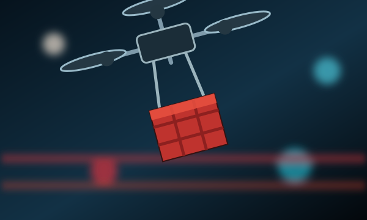

About Us

A delivery drone is an autonomous unmanned aerial vehicle used to transport packages, medical supplies, food, or other goods.
2013-2015
The concept of drone delivery entered the mainstream with Amazon.com founder Jeff Bezos' announcement that Amazon was planning rapid delivery of lightweight commercial products using UAVs. Amazon's press release was met with skepticism, with perceived hurdles including federal and state regulatory approval, public safety, reliability, individual privacy, operator training and certification, security, and logistical challenges.
In December 2013, in a research project delivered a sub-kilogram of medicine using a prototype Microdrones, raising speculation that disaster relief may be the first industry the company will use the technology.
In July 2014 it was revealed Amazon was working on its 8th and 9th drone prototypes where each could fly 50 mph and carry a 5 lb package.
2016-2026
In August 2016, Google revealed it had been testing UAVs in Australia for two years. The Google X program known as Project Wing announced an aim to produce drones that can deliver products sold via e-commerce.
In 2020, drone delivery continued to grow as companies tested new ways to move small packages quickly. As the technology improved, drones became a possible solution for medical deliveries, food delivery, and short distance shipping.